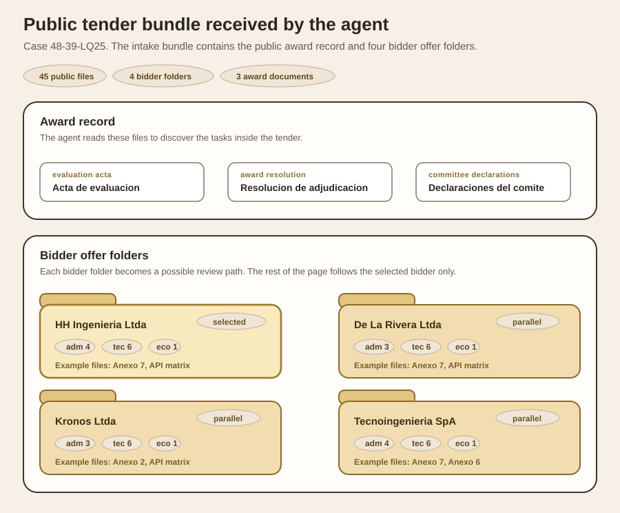

1
Receive the full tender and identify the tasks inside it
task discovery
The agent starts with the full tender bundle: bases, annexes,
bidder files, and the public evaluation record.
Its job in this step is to identify which review tasks exist inside the tender.
Input artifact

This is the actual public intake bundle for case 48-39-LQ25: three award-record files plus four bidder offer folders, each split into administrative, technical, and economic documents.
Environmental impact
A separate task identified from the same tender bundle.
parallel
Digital technical-inspection capability
This is the branch the rest of the page follows.
selected
Integrity program
Another task identified from the same tender bundle.
parallel
1
The agent scans the tender for reviewable criteria
It uses the public evaluation record plus the available bidder files to split the tender into task-sized units.
2
The rest of the page follows one branch only
From this point onward, the page tracks the digital technical-inspection task and ignores the parallel tasks.